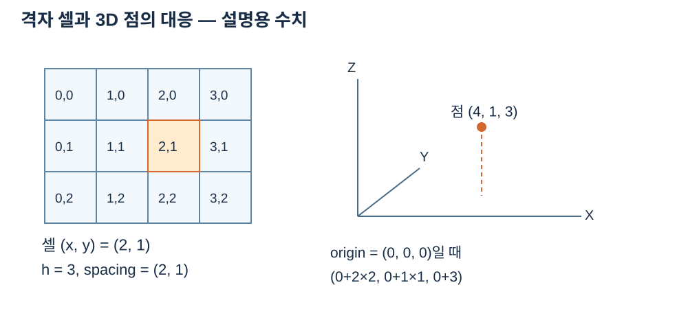

격자·좌표·결측 계약
직교 격자의 셀 (x,y)에 값 h가 있으면 점은 (origin.x + x·spacing_x, origin.y + y·spacing_y, origin.z + h)입니다. 좌표와 h는 지정한 길이 단위를 사용하고 frame은 좌표계 식별자입니다. None은 결측이며 수치 0과 다릅니다. 각 슬롯의 순서를 유지하여 점군으로 변환합니다.


판독 기준
- 예의 좌표는 (0+2×2, 0+1×1, 0+3) = (4,1,3)입니다.
수치와 도형은 연결된 계약의 핵심 관계를 설명하는 예입니다. 실제 SDK 출력으로 명시한 자료를 제외하면 실행 결과나 장비 실측으로 해석하지 않습니다. 좌표계·입력 형식·수명과 오류 조건은 관련 API 계약을 확인한 뒤 적용하세요.
너비와 높이는 양수, 값 개수는 너비×높이, spacing은 유한한 양수, origin과 유효 높이는 유한수, frame은 0이 아니어야 합니다. ROI 좌표는 현재 맵 기준이고 저장소를 공유합니다. ROI의 원점은 x와 y 방향으로 각각 ROI 시작 좌표×spacing만큼 이동하며 z 원점은 유지됩니다. 유닛과 frame을 함께 기록하세요.
median(kernel, min_valid)과 fill_holes(kernel, min_valid)의 커널은 양의 홀수이고 유효 이웃 최소 수는 1부터 kernel²까지입니다. 경계에서는 이웃을 잘라냅니다. median은 결측 중심을 그대로 두고, fill_holes는 원본의 유효 이웃으로 결측 중심만 채웁니다. 유효 이웃이 부족하면 결측입니다.
이 그림과 식에서 origin은 현재 격자의 로컬 (0,0)에 해당하는 위치입니다. 예를 들어 원점이 (10,20,30), spacing이 (2,3)이고 셀 (2,1)의 높이가 6이라면 점은 (14,23,36)입니다. ROI가 (1,0)에서 시작하면 새 원점 X는 12로 바뀌므로 같은 원래 셀은 ROI 로컬 (1,1)에서 동일한 (14,23,36)으로 계산됩니다. 셀 인덱스와 물리 좌표를 혼동하지 않도록 결과에 unit과 frame을 붙여 사용합니다.
유효 높이가 0일 때는 점의 Z가 30인 것이지 결측이 아닙니다. 반대로 None은 높이를 숫자로 계산하지 않고 해당 슬롯에 그대로 남습니다. 필터의 이웃 개수는 이 유효한 슬롯만 셉니다. 같은 격자의 부분을 연속으로 잘라내더라도 각 ROI는 자신을 기준으로 좌표를 받으므로, 원본 좌표를 반복해서 더하지 않도록 현재 원점을 읽어 확인합니다.